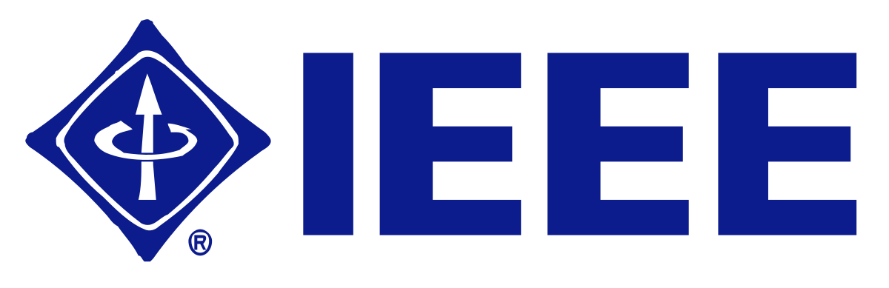

ISIT 2018 Tutorial on Submodularity

ISIT 2018 Tutorial on Submodularity in Information and Data Science. link
Abstract:
Submodularity is a structural property over functions that has received significant attention in the mathematics community, owing to their natural and wide ranging applicability. In particular, numerous challenging problems in information theory, machine learning, and artificial intelligence rely on optimization techniques for which submodularity is key to solving them efficiently.We will start by defining submodularity and polymatroidality — we will survey a surprisingly diverse set of functions that are submodular and operations that preserve submodularity. Next we look at submodular functions that have been classically used as information measures and their novel applications in ML and AI including active/semi-supervised learning, structured sparsity, data summarization, and combinatorial independence and generalized entropy. Subsequently, we’ll define the submodular polytope, and its relationship to the various greedy algorithms and its exact and efficient solution to certain linear programs. We will see how submodularity shares certain properties with convexity (efficient minimization, discrete separation, subdifferentials, lattices and sub-lattices, and the convexity of the Lovasz extension), concavity (via its definition, submodularity via concave functions, superdifferentials), and neither (simultaneous suband super-differentials, efficient approximate maximization). Finally, we will discuss some extensions of submodularity that have proven useful in recent years.

-
Jeffrey Bilmes: Jeffrey A. Bilmes is a professor in the Department of Electrical Engineering at the University of Washington, Seattle and an adjunct professor in the Department of Computer Science and Engineering and the Department of Linguistics. He received his Ph.D. in Computer Science from the University of California, Berkeley. He is a 2001 NSF Career award winner, a 2002 CRA Digital Government Fellow, a 2008 NAE Gilbreth Lectureship award recipient, a 2012/2013 ISCA Distinguished Lecturer, a Microsoft Faculty Award, and a Google Faculty Award. Prof. Bilmes has been working on submodularity in machine learning since 2003. He received a best paper award at ICML 2013, a best paper award at NIPS 2013, and a best paper award at ACMBCB all for work in this area. Prof. Bilmes is also a recipient of a 25-year paper award from the International Conference on Supercomputing for his 1997 paper on high-performance matrix optimization. Prof. Bilmes authored the graphical models toolkit (GMTK), a dynamic graphicalmodel based software system that is widely used in speech and language processing, bioinformatics, and human-activity recognition.
-
Amin Karbasi: Amin Karbasi is currently an assistant professor of Electrical Engineering and Computer Science at Yale University. He has been the recipient of AFOSR 2018 Young Investigator Award, Grainger Award 2017 from National Academy of Engineering for interdisciplinary research, Microsoft Azure research award 2017, DARPA 2016 Young Faculty Award, Simons-Berkeley fellowship 2016, Google Faculty Award 2015, and ETH fellowship 2013. His work has been recognized with a variety of paper awards, including Medical Image Computing and Computer Assisted Interventions Conference (MICCAI) 2017, International Conference on Artificial Intelligence and Statistics (AISTAT) 2015, IEEE ComSoc Data Storage 2013, International Conference on Acoustics, Speech, and Signal Processing (ICASSP) 2011, ACM SIGMETRICS 2010, and IEEE International Symposium on Information Theory (ISIT) 2010 (runner-up). His Ph.D. work received the Patrick Denantes Memorial Prize 2013 for the best doctoral thesis in the School of Computer and Communication Sciences at EPFL, Switzerland.